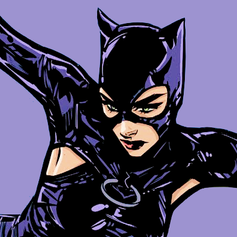
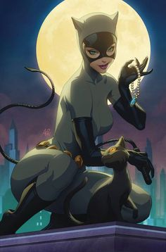
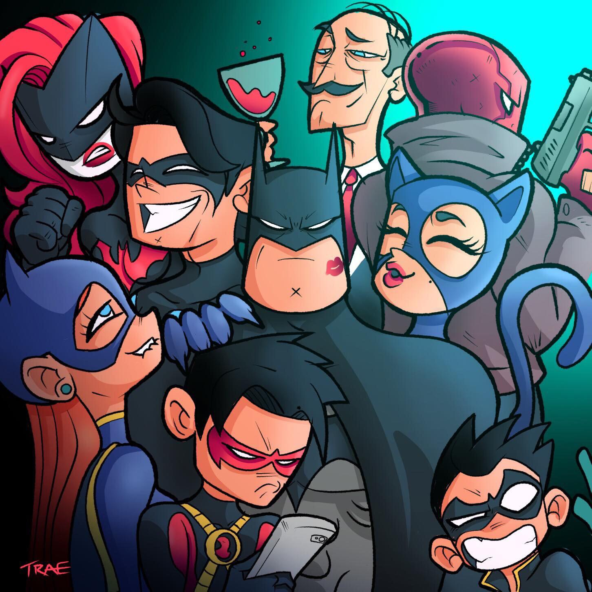
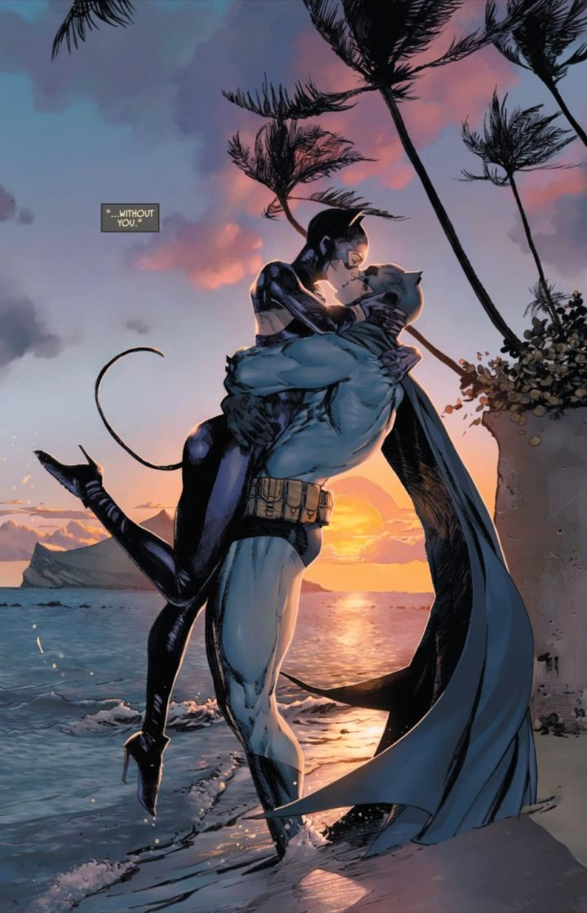

Origem e História

A Catwoman (Mulher-Gato ), cujo nome verdadeiro é Selina Kyle, fez sua primeira aparição nos quadrinhos da DC Comics em "Batman 1", em 1940. Sua história de origem variou ao longo dos anos, mas geralmente envolve uma trajetória de tragédia e redenção. Selina cresceu em bairros pobres de Gotham City e teve uma infância difícil, o que a levou a se tornar uma ladra para sobreviver.
Tornando-se a Mulher-Gato

Selina Kyle adotou a identidade da Mulher-Gato como uma forma de assumir o controle de sua própria vida e desafiar as injustiças que testemunhou na cidade. Usando seu intelecto afiado, habilidades de combate e agilidade felina, ela se tornou uma das ladras mais habilidosas e notórias de Gotham City.
Filiação a Grupos

A Mulher-Gato não é conhecida por fazer parte de grupos de super-heróis tradicionais, mas sua flexibilidade moral e seu estilo de vida independente muitas vezes a colocam em contato com diferentes facções e equipes dentro do universo DC. Ela geralmente opera sozinha, mas ocasionalmente trabalha com outros personagens, principalmente o Batman e outros membros da "Família Batman". Apesar de suas diferenças, a Mulher-Gato e o Batman ocasionalmente se unem para enfrentar ameaças em comum ou perseguir objetivos compartilhados. Sua parceria é uma fonte constante de tensão e intriga, adicionando camadas de complexidade aos enredos em que trabalham juntos.
Relação com o Batman

A relação entre a Mulher-Gato e o Batman é complexa e multifacetada. Eles compartilham uma conexão única,que transcende as fronteiras do herói e do vilão. baseada em uma mistura de respeito mútuo, atração romântica e confrontos intensos. Enquanto a Mulher-Gato é muitas vezes retratada como uma anti-heroína, ela também mostra um lado mais suave quando interage com o Batman, às vezes ajudando-o em suas missões ou até mesmo se aliando a ele em momentos de necessidade.
Em muitas interpretações, a relação entre a Mulher-Gato e o Batman oscila entre a tensão romântica e o conflito moral. Ambos são atraídos um pelo outro, mas sua lealdade a seus próprios princípios muitas vezes os coloca em lados opostos da lei.
Apesar de suas diferenças e dos desafios em conciliar seus estilos de vida, a relação entre a Mulher-Gato e o Batman é uma das mais duradouras e cativantes do universo dos quadrinhos, continuando a intrigar os fãs ao longo das décadas.